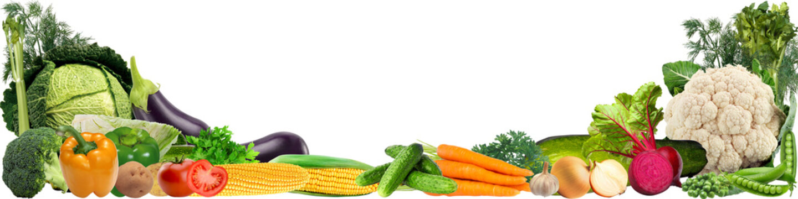
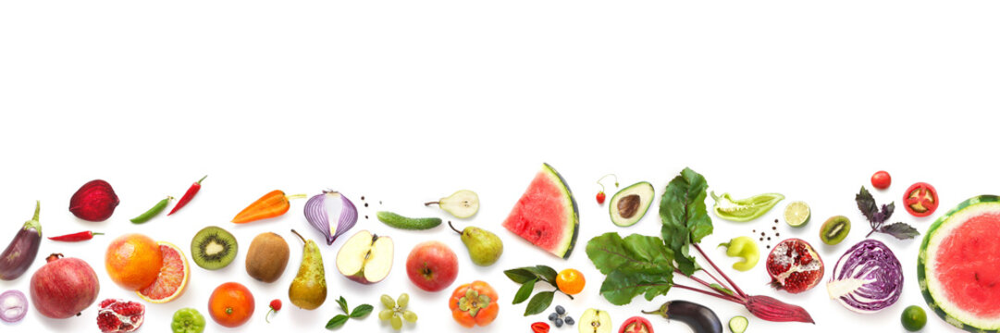
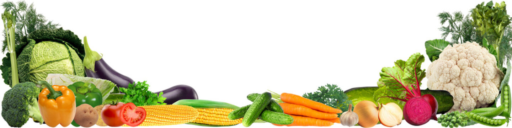
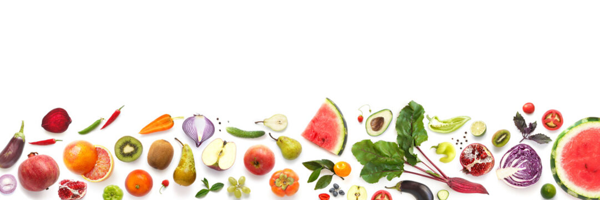

About vegetable's
The importance of Vegetable's
A diet rich in vegetables and fruits can lower blood pressure, reduce the risk of heart disease and stroke, prevent some types of cancer, lower risk of eye and digestive problems, and have a positive effect upon blood sugar, which can help keep appetite in check.
Vegetables are a good source of dietary fiber, a type of carbohydrate that helps pass food through your digestive system. Studies show that fiber may also improve vitamin and mineral absorption in the body, which could potentially raise your daily energy levels
Vegetable is a broad term that refers to the edible parts of plants, which are usually their leaves, roots, fruits, or seeds. Vegetables are a staple food across the world and are a fundamental part of modern agriculture.
Since they’re low in calories but high in nutrients, most health experts recommend that you consume vegetables daily. There’s a scientific consensus that a balanced, rotating diet of different varieties of vegetables is one of the best ways to source nutrients from your food starting at a young age.
Health Benefits
Vegetables are full of essential vitamins, minerals, and antioxidants that provide many important health benefits to your body. For instance, carrots are known for being very high in vitamin A, which plays an important role in eye health, as you grow older.
Vegetables also offer many other health benefits like:
Improved Digestive Health Vegetables are a good source of dietary fiber, a type of carbohydrate that helps pass food through your digestive system. Studies show that fiber may also improve vitamin and mineral absorption in the body, which could potentially raise your daily energy levels.
Lower Blood Pressure Many green leafy vegetables like kale, spinach, and chard contain potassium. Potassium helps your kidneys filter sodium out of your body more efficiently, which can reduce your blood pressure.
Lower Risk of Heart Disease Green leafy vegetables also contain vitamin K, which is believed to prevent calcium from building up in your arteries. This can lower your risk of arterial damage and help prevent many heart health complications in the future.
Diabetes Control Vegetables are particularly high in fiber, which is needed for optimal digestion. They have a low glycemic index, so your blood sugar won’t rise quickly after a meal. The American Diabetes Association recommends at least 3 to 5 servings per day of non-starchy vegetables like broccoli, carrots, or cauliflower.